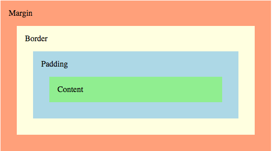
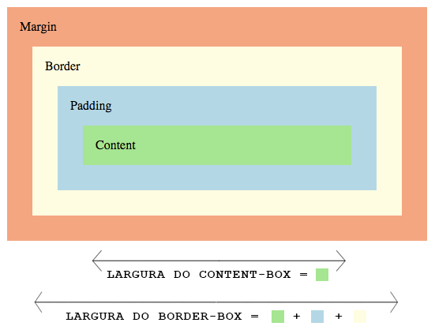

CSS Basics - Margin x Padding
Publicado em:
@fernandabernardo
Depois de falar sobre a propriedade display no post anterior, continuaremos falando sobre outras propriedades básicas do CSS. Nesse post conheça um pouco mais sobre as propriedades de espaçamento margin e padding.
Diferença
Para começar, qual a principal diferença entre margin e padding? Ao utilizar a propriedade margin, você está acrescentando um espaço externo ao elemento, ou seja, para fora (a distância entre um elemento e outro). Enquanto o padding acrescenta um espaço interno ao elemento, para dentro (a distância entre o conteúdo e a borda). 
Forma de Usar
As duas propriedades são muito parecidas na forma de usar. Existem duas formas para cada uma delas... A primeira forma é especificar cada um dos lados, sendo eles [margin/padding]-top, [margin/padding]-bottom, [margin/padding]-left e [margin/padding]-right. E existe a forma reduzida, em que você usa apenas a propriedade margin ou padding e pode escrever de até 4 formas diferentes:
- top right bottom left - por exemplo:
1em 2em 3em 4emque correspondem àqueles valores respectivamente; - top right/left bottom - por exemplo:
1em 2em 3em, sendo que2emcorresponde aos valoresrighteleft; - top/bottom right/left - por exemplo:
1em 2em, sendo que1emcorresponde aos valorestopebottome2emaos valoresrighteleft; - top/right/bottom/left - por exemplo:
1em, que corresponde a todos os valores.
Box Sizing
Uma propriedade relacionada com as duas tratadas acima é a box-sizing. Ela é utilizada para alterar a forma como o navegador calcula os tamanhos (altura e largura) de um elemento. Ela possui três valores:
- content-box (valor padrão)
- padding-box (não é muito suportado pelos browsers, apenas o Firefox tem suporte)
- border-box
Veja o exemplo Box sizing by Fernanda Bernardo (@FernandaBernardo) no CodePen.
Para entender melhor como cada um destes valores funciona, acima temos duas sections, rosa e azul, usando os valores content-box e padding-box, respectivamente. Além disso, colocamos um padding de 30px em ambas. Começando pela <section> com content-box (rosa) para calcular as dimensões dela (altura e largura), apenas o conteúdo é contado. Tanto margin como padding e border são considerados para fora do box. Ou seja, se minha <section> tem 100x100px e um padding de 30px, logo o tamanho total será 160x160px (100 + 30 + 30). Já na <section> com border-box, o tamanho final seria 100x100px porque, para calcular o tamanho final do elemento, o navegador utiliza a soma do conteúdo + padding + border. Um pouco confuso? Veja a imagem abaixo que o conceito ficará mais claro:

Centralização horizontal
Um dos valores da propriedade margin é auto. Para usá-lo, precisamos que o elemento seja um bloco, ou seja, tenha a declaração display: block, e tenha uma largura (width) definida. Dessa forma, o elemento ficará centralizado horizontalmente. Vale lembrar que esse valor não funciona para centralizar verticalmente, com margin-top ou margin-bottom.
Veja o exemplo Margin: auto by Fernanda Bernardo (@FernandaBernardo) no CodePen.
Margin com elementos inline
A propriedade margin serve para definir o tamanho da área de margem de um box para todas as direções (top, right, bottom, left). Com apenas uma exceção, as margens verticais (top e bottom) não funcionam para elementos inline. Veja o exemplo abaixo; no primeiro parágrafo, como o span está com seu display padrão (inline) a propriedade margin funciona somente nas dimensões horizontais. Já no segundo, como está inline-block, o margin é aplicado em todas as direções.
Veja o exemplo Margin inline by Fernanda Bernardo (@FernandaBernardo) no CodePen.
Collapsed Margin
As margins top e bottom às vezes são combinadas e colapsadas em apenas uma. Mas como funciona isso?
- Margens de blocos "empilhados": no nosso exemplo, o bloco azul tem uma
margin-bottomde1eme o bloco rosa umamargin-topde2em. No final, o espaçamento entre os blocos deveria ser de3em(1em+2em), certo? Mas não é isso que acontece... O espaçamento final é a maior das duas margens, no caso2em. - Margens com elementos pai e primeiro / último filho: no nosso exemplo, se não houver nenhuma borda, padding ou elemento inline, acontece o mesmo efeito com as margens, e a de maior valor é aplicada. É aplicada a margem do parágrafo, que tem o maior valor, em vez da margem do bloco verde. Ao descomentar a borda do
.outro-bloco, as margens serão somadas normalmente.
Veja o exemplo Collapsed margin by Fernanda Bernardo (@FernandaBernardo) no CodePen.
Dois casos em que a margem nunca colapsa são com elementos com float ou posição absoluta.
Background com padding
Um caso interessante é se tentarmos usar um background com padding. Visualmente, parece que o padding não é aplicado nem para o top nem para o left. Só que ele continua sendo aplicado, mas o background não respeita esse padding. Para ficar "certo", precisamos adicionar a declaração background-origin: content-box. Experimente comentar essa linha no CSS do exemplo para ver o que acontece.
Veja o exemplo Background with padding by Fernanda Bernardo (@FernandaBernardo) no CodePen.
Conclusão
Nesse post, falamos um pouco sobre as diferenças entre margin e padding, suas aplicações e funcionamento. Continuaremos com a nossa série sobre CSS, e se tiver alguma sugestão de tema que queira ver, coloque nos comentários ;D